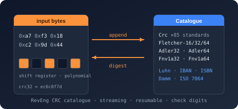

Namespace Bodu.IO.Hashing.Extensions

Purpose
Bodu.IO.Hashing.Extensions holds the extension methods for the BCL NonCryptographicHashAlgorithm base type that the Bodu hash algorithms derive from. (CRC lookup-table construction lives in Bodu.IO.Hashing.Checksums — see CrcLookupTableBuilder.)
Key types
- NonCryptographicHashAlgorithmExtensions — convenience methods on
System.IO.Hashing.NonCryptographicHashAlgorithm—ComputeHash,AppendData, andVerifyHash/TryVerifyHash(with stream-based async overloads) that fit between the BCL surface and the Bodu hash algorithms.
Example
using Bodu.IO.Hashing;
using Bodu.IO.Hashing.Checksums;
using Bodu.IO.Hashing.Extensions;
var crc = new Crc(CrcStandard.CRC32_ISOHDLC);
// ComputeHash extension: one-shot digest over a span, no manual Append / reset.
byte[] digest = crc.ComputeHash("123456789"u8);
Notes
- One-shot vs. streaming.
ComputeHashresets the instance, appends, and snapshots in one call; use the baseAppend/GetCurrentHashpair directly when you need to hash in chunks. - See also: the CRC guide, the Bodu.IO.Hashing landing page.
Classes
NonCryptographicHashAlgorithmExtensions
Extends NonCryptographicHashAlgorithm with one-shot hashing, streaming and async input, and constant-time hash verification — the high-level surface that NonCryptographicHashAlgorithm itself omits.